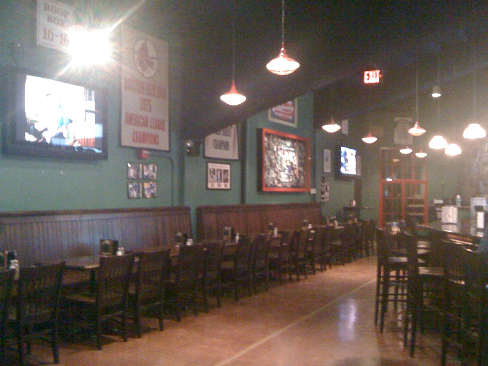
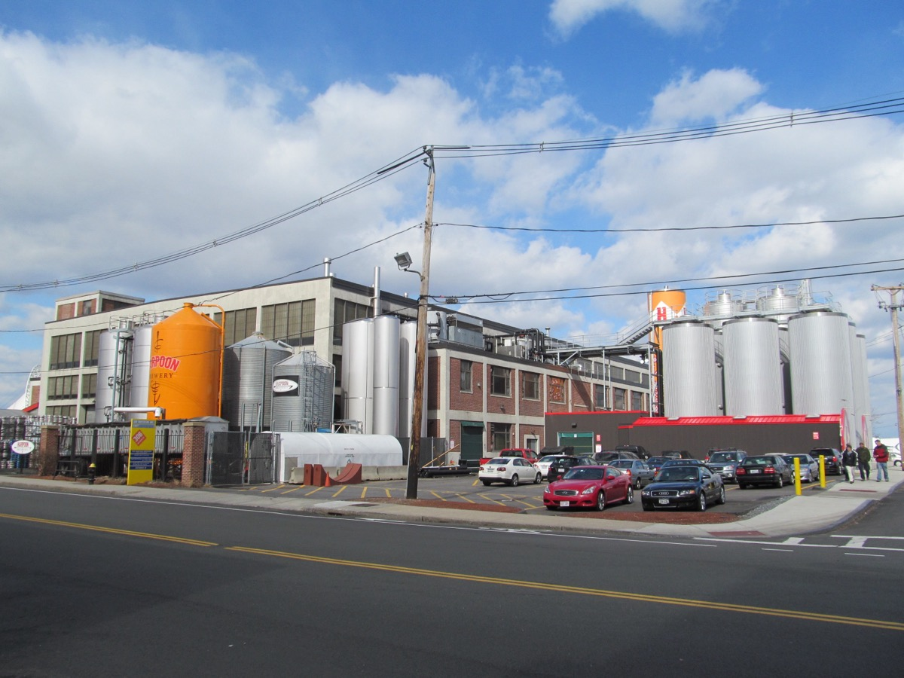
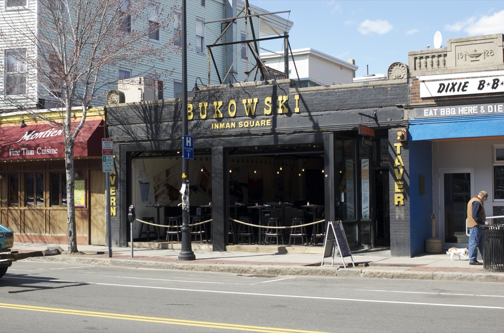
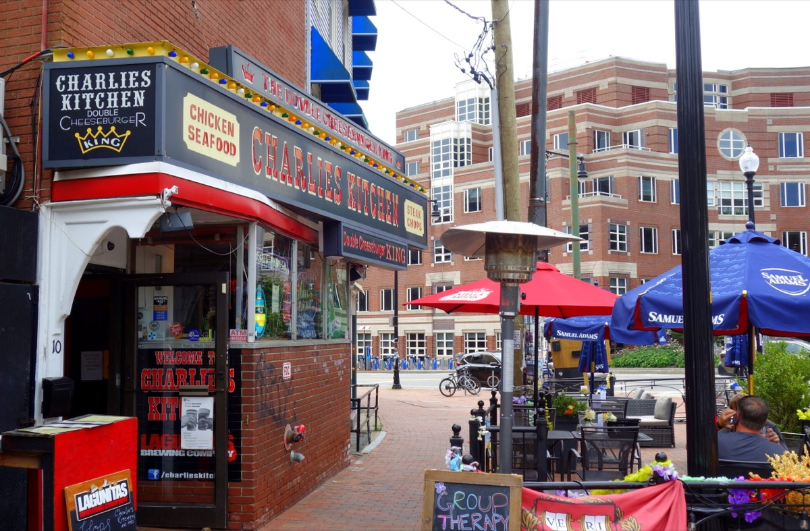

Boston bars get friendly once there is a reason to talk to a stranger: trivia, a board game, a run club, a shared table with no other seats left. Here are the bars that supply that reason, grouped by what kind of reason it is, plus how to actually use it once you're there.
All of these are on the T. Event nights change, so check a bar's calendar before you go, and weekends tend to arrive in pre-formed groups — Tuesday through Thursday is when the room is actually open to a stranger.
The short answer
Short on time? Start with these 10
01 · Built-in format
Bars with a built-in social format
Trivia, board games, bowling and shuffleboard: a reason to talk to the next table that doesn't require you to invent one.
The Burren
Irish pub with a session up front and trivia and bands in the back. Solo players join trivia teams all the time. Format: trivia and music, check the calendar. Open daily until 1am; best on weeknights.
Democracy Brewing
Worker-owned brewery with a long communal room and a calendar of trivia, storytelling and book clubs. Open daily, check hours; best midweek.
Knight Moves Board Game Café
Hundreds of board games, staff who teach, and open game nights that match solo players into groups. Open afternoons to late; best on open game nights.
Lucky Strike Fenway
Bowling, pool, shuffleboard and darts across several floors, so you share lanes with strangers. Open daily, late; best on non-game weeknights.
Bleacher Bar

Built into Fenway Park with a window onto the outfield. On game day everyone yells at the same umpire. Daily, opens early on game days; best on Red Sox home games.
Cask 'n Flagon
The Red Sox bar since 1969. Open daily, late; best pre-game.
A lot of these format nights — trivia, sessions, open game nights — cost nothing to walk into. See more of what's free around the city in our guide to free things to do in Boston.
02 · Communal & beer halls
Big communal bars and beer halls
Long shared tables, no small ones. You end up next to someone whether you meant to or not.
Harpoon Beer Hall

The most social room in Boston: long communal tables, no small ones, soft pretzels with beer cheese. Walk-in, $$. Daily, check hours; busiest on weekend afternoons.
Trillium Fort Point & the Greenway beer garden
The summer Greenway beer garden is the social version: picnic tables, food trucks, after-work crowd from 5pm. Walk-in, $$. Daily; beer garden May–Oct; best in summer, after 5pm.
Night Shift Brewing, Lovejoy Wharf
Big hall with long tables, pizza and a river patio a block from the Garden. The stop before Bruins and Celtics games. Walk-in, $$. Daily, check status first; best before Garden games.
Time Out Market bar
Food hall with one long central bar and hundreds of first-come stools at shared tables. Walk-in, $$. Daily, until late; best Friday and Saturday.
Harpoon and Trillium are both an easy walk from the water. Read up on the neighborhood in our Seaport guide.
03 · Neighborhood bars
Neighborhood bars where the regulars actually talk
Small rooms, a dozen stools, no way to sit through one without joining the conversation.
Delux Café
Tiny corner bar with Elvis memorabilia and a dozen stools. You cannot be in the room without joining the conversation. Cash-friendly, $$. Evenings, until 1am, check days; good any weeknight.
Silhouette Lounge
Allston dive with cheap beer, free popcorn and darts. Ask to play next. Cash preferred, $. Daily, until 2am; best Thursday to Saturday.
Bukowski Tavern

Narrow bar with a hundred-bottle beer list and a wheel you spin for a random beer. Commenting on someone's drink is normal. Historically cash-only, $$. Daily, until 2am; best on weeknights.
The Druid
Small Irish pub with the best Guinness around and welcoming regulars. Daily, until 1am; sessions Sunday afternoon and Wednesday.
Brendan Behan Pub
Cash-only Irish pub, no kitchen (bring food in), dogs welcome, jazz and session nights. Cash only, $. Daily, until 1am; good any weeknight.
A small, cash-friendly neighborhood pub is also a very good plan when the weather turns. More ideas in our rainy day guide.
04 · Student bars
Harvard Square and Central Square: student bars
Loud, cheap and full of grad students who don't mind you talking to the next table.
Charlie's Kitchen

Diner downstairs, loud cheap bar upstairs, and a beer garden full of grad students. Talking to the next table is normal. $. Daily, until 1am or later; best summer evenings.
Phoenix Landing
Soccer bar on weekend mornings, DJ dance floor after 10pm. $. Daily, until 1am or 2am; mornings are the most sociable.
Also worth a stop: Grendel's Den (basement bar, patio), the Hong Kong (scorpion bowls) and Felipe's roof deck, all lively until 1am near Harvard station. More in the Harvard Square guide. A night there doubles easily as an actual date — a few more ideas in our Boston date ideas guide.
05 · Run clubs & meetups
Run clubs, meetups and the bars they end at
You don't have to run to make this work — the bar afterward is the actual point.
Lamplighter Brewing
Converted-garage brewery with Cambridge's most popular run club: a few miles along the Charles, then beer. Daily; run club weekly.
Dorchester Brewing Company
Big taproom with rooftop greenhouse, barbecue, trivia and a busy run club. Daily; run club and events weekly.
Also worth checking: language exchanges, board game nights, drag bingo and comedy open mics — see how to make friends in Boston and new to Boston. Chaining a few of these into one afternoon starts to feel like an actual scavenger hunt — our Boston city game turns that into a real challenge.
06
How to actually talk to people at a bar in Boston
- Sit at the bar, not a table. Let the bartender introduce you.
- Pick a night with a format. Trivia, a game or a run club. Tuesday to Thursday is best.
- Talk about the thing, not yourself. "What is that beer?" works. "What do you do?" does not.
- Go back. The third visit is when someone asks where you have been.
- Go early and alone. Arrive at 6pm before groups form.
- Know the rules. Last call is 1am most places, the T stops around 12:30, no drink discounts by law.
Going alone is easier once you've done it once. More on that in our guide to what's on this weekend.
07
Bar by bar
Every bar on this page, side by side.
| Bar | Neighborhood | Nearest T | Format | Best night |
|---|---|---|---|---|
| The Burren | Davis Square | Davis | Trivia, sessions, shows | Weeknights |
| Democracy Brewing | Downtown Crossing | Downtown Crossing | Trivia, events | Midweek |
| Knight Moves | Brookline | Coolidge Corner | Board games | Open game nights |
| Lucky Strike Fenway | Fenway | Kenmore | Bowling, shuffleboard, pool | Non-game weeknights |
| Bleacher Bar | Fenway | Kenmore | Sports bar inside Fenway | Red Sox home games |
| Cask 'n Flagon | Fenway | Kenmore | Sports bar | Pre-game |
| Harpoon Beer Hall | Seaport | Harbor St (SL2) | Communal tables | Weekend afternoons |
| Trillium Fort Point / Greenway | Fort Point | South Station | Beer garden | Summer, after 5pm |
| Night Shift, Lovejoy Wharf | West End | North Station | Waterfront taproom | Before Garden games |
| Time Out Market | Fenway | Fenway | Food hall, shared seating | Friday and Saturday |
| Delux Café | South End | Back Bay | Tiny neighborhood bar | Any weeknight |
| Silhouette Lounge | Allston | Harvard Ave (B) | Dive, darts | Thursday to Saturday |
| Bukowski Tavern | Back Bay / Inman Square | Hynes / Central | Beer bar | Weeknights |
| The Druid | Inman Square | Central, then walk | Irish pub, sessions | Sunday afternoon, Wednesday |
| Brendan Behan Pub | Jamaica Plain | Jackson Square | Cash-only pub, dogs | Any weeknight |
| Charlie's Kitchen | Harvard Square | Harvard | Beer garden, diner bar | Summer evenings |
| Phoenix Landing | Central Square | Central | Soccer mornings, DJ nights | Weekend mornings |
| Lamplighter Brewing | Cambridge | Kendall or Central | Run club, taproom | Run club night |
| Dorchester Brewing | Dorchester | Andrew | Run club, trivia, events | Run club night |
| Castle Island Brewing | South Boston | Andrew | Run club, taproom | Run club night |
Event nights change; confirm first. More in Boston at night.
FAQ
Common questions
What is the best bar to meet people in Boston?
Trivia at the Burren or Democracy Brewing, game night at Bleacher Bar, or Harpoon Beer Hall for shared tables.
Which night is best for meeting people at Boston bars?
Tuesday through Thursday, when trivia, run clubs and game nights happen. Weekend crowds arrive in groups and stay in them.
Is it normal to go to a bar alone in Boston?
Yes, especially at neighborhood pubs, breweries and trivia nights. Sit at the bar, and at trivia tell the host you are solo.
Are there run clubs that meet at Boston bars?
Yes. Lamplighter, Dorchester Brewing and Castle Island host weekly run clubs that end at the bar. Check their social feeds.